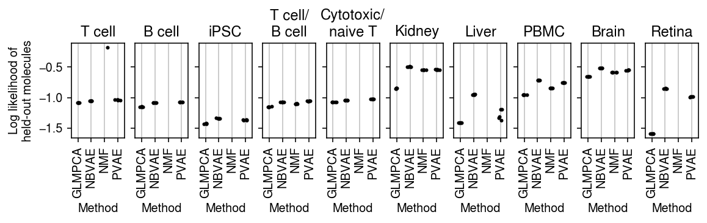

Low rank approximation
Table of Contents
Introduction
The key idea of our approach to modeling scRNA-seq is to separate sampling variation and expression variation. This approach leads to the following multi-gene model for scRNA-seq data: \( \newcommand\ml{\mathbf{L}} \newcommand\mf{\mathbf{F}} \newcommand\my{\mathbf{Y}} \)
\begin{align*} x_{ij} &\sim \operatorname{Poisson}(\lambda_{ij})\\ \lambda_{ij} &= h^{-1}((\ml\mf')_{ij}) \end{align*}where \(i = 1, \ldots, n\), \(j = 1, \ldots, p\), \(\ml\) is an \(n \times K\) matrix, and \(\mf\) is a \(p \times K\) matrix. (Here, we absorb the size factor into \(\ml\).) A number of methods have been proposed to fit this model (or extensions to it), several specialized for scRNA-seq data.
- Non-negative matrix factorization (Lee and Seung 2001, Févotte and Idier 2011)
- Negative Binomial Matrix Factorization (Gouvert et al. 2018)
- Latent dirichlet allocation (Blei et al 2003, Hoffman et al. 2010, Taddy 2012)
- Hierarchical Bayesian Poisson Factorization (Cemgil 2009, Gopalan et al. 2015, Levitin et al. 2019)
- ZINB-WAVE (Risso et al. 2018)
- scVI (Lopez et al. 2018)
- DCA (Eraslan et al. 2019)
- GLM-PCA (Townes et al. 2019)
Here, we evaluate methods on their ability to estimate \(\lambda\). We use Poisson thinning (Gerard and Stephens 2017, Gerard 2019) of real data
\begin{align*} x_{ij} &\sim \mathrm{Poisson}(\lambda_{ij})\\ y_{ij} &\sim \mathrm{Binomial}(x_{ij}, 0.5)\\ \tilde{y}_{ij} &= x_{ij} - y_{ij} \end{align*}resulting in two matrices \(\my\) and \(\tilde{\my}\) with identical \(\lambda\). Our benchmark estimates \(\ml, \mf\) from \(\my\) and evaluates the estimate using the log likelihood of \(\tilde{\my}\).
Setup
import collections import numpy as np import os.path import pandas as pd import scmodes
%matplotlib inline %config InlineBackend.figure_formats = set(['retina'])
import colorcet import matplotlib.pyplot as plt plt.rcParams['figure.facecolor'] = 'w' plt.rcParams['font.family'] = 'Nimbus Sans'
Results
Datasets
Take genes with non-zero counts present in at least 25% of cells. In the iPSC data, this is all 9,957 genes, so take a random sample of 500 genes.
def _read_10x(k, min_detect=0.25, n_cells=1000, seed=1): return scmodes.dataset.read_10x(f'/project2/mstephens/aksarkar/projects/singlecell-ideas/data/10xgenomics/{k}/filtered_matrices_mex/hg19/', min_detect=0.25, return_df=True).sample(n=n_cells, axis=0, random_state=seed) def _mix_10x(k1, k2, min_detect=0.25, n_cells=1000, seed=1): x1 = scmodes.dataset.read_10x(f'/project2/mstephens/aksarkar/projects/singlecell-ideas/data/10xgenomics/{k1}/filtered_matrices_mex/hg19/', return_df=True, min_detect=0) x2 = scmodes.dataset.read_10x(f'/project2/mstephens/aksarkar/projects/singlecell-ideas/data/10xgenomics/{k2}/filtered_matrices_mex/hg19/', return_df=True, min_detect=0) return scmodes.dataset.synthetic_mix(x1, x2, min_detect=min_detect)[0].sample(n=n_cells, axis=0, random_state=seed) def _cd8_cd19_mix(**kwargs): return _mix_10x('cytotoxic_t', 'b_cells', **kwargs) def _cyto_naive_mix(**kwargs): return _mix_10x('cytotoxic_t', 'naive_t', **kwargs) data = { 'cytotoxic_t': lambda: _read_10x('cytotoxic_t'), 'b_cells': lambda: _read_10x('b_cells'), 'ipsc': lambda: scmodes.dataset.ipsc('/project2/mstephens/aksarkar/projects/singlecell-qtl/data/', return_df=True).sample(n=1000, axis=0, random_state=1).sample(n=500, axis=1, random_state=2), 'cytotoxic_t-b_cells': _cd8_cd19_mix, 'cytotoxic_t-naive_t': _cyto_naive_mix, 'pbmcs_68k': lambda: _read_10x('fresh_68k_pbmc_donor_a'), }
Report the data dimensions.
pd.DataFrame([data[k]().shape for k in data], columns=['num_cells', 'num_genes'], index=data.keys())
num_cells num_genes cytotoxic_t 1000 461 b_cells 1000 375 ipsc 1000 500 cytotoxic_t-b_cells 1000 404 cytotoxic_t-naive_t 1000 419 pbmcs_68k 1000 404
Report the proportion of zeros.
pd.Series({k: (data[k]() == 0).values.mean() for k in data})
cytotoxic_t 0.437247 b_cells 0.416360 ipsc 0.301654 cytotoxic_t-b_cells 0.430270 cytotoxic_t-naive_t 0.437422 pbmcs_68k 0.444396 dtype: float64
Poisson thinning benchmark
Run the CPU methods.
sbatch --partition=broadwl -n1 --mem=10G --time=24:00:00 --job-name=lra-generalization -a 31,39 #!/bin/bash source activate scmodes python <<EOF <<imports>> import os <<data>> ranks = [1, 2, 4, 8] methods = ['nmf', 'glmpca'] tasks = [(d, m, r) for d in data for m in methods for r in ranks] d, m, r = tasks[int(os.environ['SLURM_ARRAY_TASK_ID'])] x = data[d]() res = scmodes.benchmark.evaluate_lra_generalization(x, methods=[m], n_components=r, tol=1e-2, n_trials=5) res.to_csv(f'/scratch/midway2/aksarkar/modes/lra-generalization/{d}-{m}-{r}.txt.gz', compression='gzip', sep='\t') EOF
Run the GPU methods.
sbatch --partition=gpu2 --gres=gpu:1 --mem=16G --time=60:00 --job-name=lra-generalization -a 0-47%4 #!/bin/bash source activate scmodes python <<EOF <<imports>> import os <<data>> methods = ['pvae', 'nbvae'] ranks = [1, 2, 4, 8] tasks = [(d, m, r) for d in data for m in methods for r in ranks] d, m, r = tasks[int(os.environ['SLURM_ARRAY_TASK_ID'])] x = data[d]() res = scmodes.benchmark.evaluate_lra_generalization(x, methods=[m], n_components=r, n_trials=5) res.to_csv(f'/scratch/midway2/aksarkar/modes/lra-generalization/{d}-{m}-{r}.txt.gz', compression='gzip', sep='\t') EOF
Collect the results.
pois_thin_res = collections.defaultdict(list) for k in data: for m in ('nmf', 'glmpca', 'pvae', 'nbvae'): for r in (1, 2, 4, 8): f = f'/scratch/midway2/aksarkar/modes/lra-generalization/{k}-{m}-{r}.txt.gz' if os.path.exists(f): pois_thin_res[(k, r)].append(pd.read_csv(f, header=[0, 1], index_col=0, sep='\t')) pois_thin_res = pd.concat({k: pd.concat(pois_thin_res[k], axis=1) for k in pois_thin_res}, axis=0) pois_thin_res.index.names = ['data', 'rank', 'trial'] pois_thin_res.to_csv('/project2/mstephens/aksarkar/projects/singlecell-modes/data/lra-generalization/lra-generalization.txt.gz', sep='\t')
Read the results.
pois_thin_res = pd.read_csv('/project2/mstephens/aksarkar/projects/singlecell-modes/data/lra-generalization/lra-generalization.txt.gz', sep='\t', header=[0, 1], index_col=[0, 1, 2])
Plot the results.
titles = ['T cell', 'B cell', 'iPSC', 'T cell/B cell', 'Cytotoxic/naive T', 'PBMC']
plt.clf() fig, ax = plt.subplots(1, 6, sharey=True) fig.set_size_inches(8, 2.5) for a, (k, g), t in zip(ax.ravel(), pois_thin_res.xs(1, level=1)['validation'].groupby(level=0), titles): for x, m in enumerate(g.columns): a.scatter(x + np.random.normal(scale=0.1, size=g.shape[0]), g[m].values, s=4, c='k', zorder=3) a.grid(c='0.8', lw=1, axis='x') a.set_xlim(-0.5, g.shape[1] - 0.5) a.set_xticks(np.arange(g.shape[1])) a.set_xticklabels([m.upper() for m in g.columns], rotation=90) a.set_xlabel('Method') a.set_title(t) ax[0].set_ylabel('Log likelihood of\nheld-out molecules') fig.tight_layout()

plt.clf() fig, ax = plt.subplots(1, 6, sharey=True) fig.set_size_inches(8, 2.5) for a, (k, g), t in zip(ax.ravel(), pois_thin_res.xs(2, level=1)['validation'].groupby(level=0), titles): for x, m in enumerate(g.columns): a.scatter(x + np.random.normal(scale=0.1, size=g.shape[0]), g[m].values, s=4, c='k', zorder=3) a.grid(c='0.8', lw=1, axis='x') a.set_xlim(-0.5, g.shape[1] - 0.5) a.set_xticks(np.arange(g.shape[1])) a.set_xticklabels([m.upper() for m in g.columns], rotation=90) a.set_xlabel('Method') a.set_title(t) ax[0].set_ylabel('Log likelihood of\nheld-out molecules') fig.tight_layout()

plt.clf() fig, ax = plt.subplots(1, 6, sharey=True) fig.set_size_inches(8, 2.5) for a, (k, g), t in zip(ax.ravel(), pois_thin_res.xs(4, level=1)['validation'].groupby(level=0), titles): for x, m in enumerate(g.columns): a.scatter(x + np.random.normal(scale=0.1, size=g.shape[0]), g[m].values, s=4, c='k', zorder=3) a.grid(c='0.8', lw=1, axis='x') a.set_xlim(-0.5, g.shape[1] - 0.5) a.set_xticks(np.arange(g.shape[1])) a.set_xticklabels([m.upper() for m in g.columns], rotation=90) a.set_xlabel('Method') a.set_title(t) ax[0].set_ylabel('Log likelihood of\nheld-out molecules') fig.tight_layout()
plt.clf() fig, ax = plt.subplots(1, 6, sharey=True) fig.set_size_inches(8, 2.5) for a, (k, g), t in zip(ax.ravel(), pois_thin_res.xs(8, level=1)['validation'].groupby(level=0), titles): for x, m in enumerate(g.columns): a.scatter(x + np.random.normal(scale=0.1, size=g.shape[0]), g[m].values, s=4, c='k', zorder=3) a.grid(c='0.8', lw=1, axis='x') a.set_xlim(-0.5, g.shape[1] - 0.5) a.set_xticks(np.arange(g.shape[1])) a.set_xticklabels([m.upper() for m in g.columns], rotation=90) a.set_xlabel('Method') a.set_title(t) ax[0].set_ylabel('Log likelihood of\nheld-out molecules') fig.tight_layout()